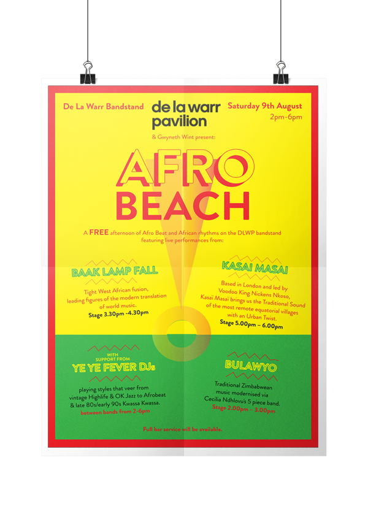
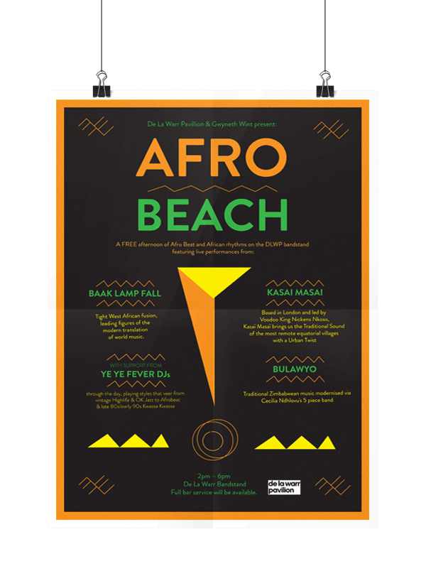
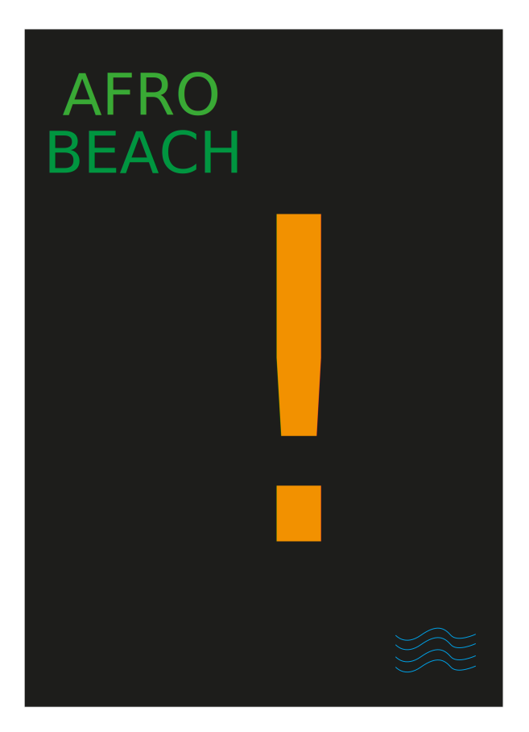
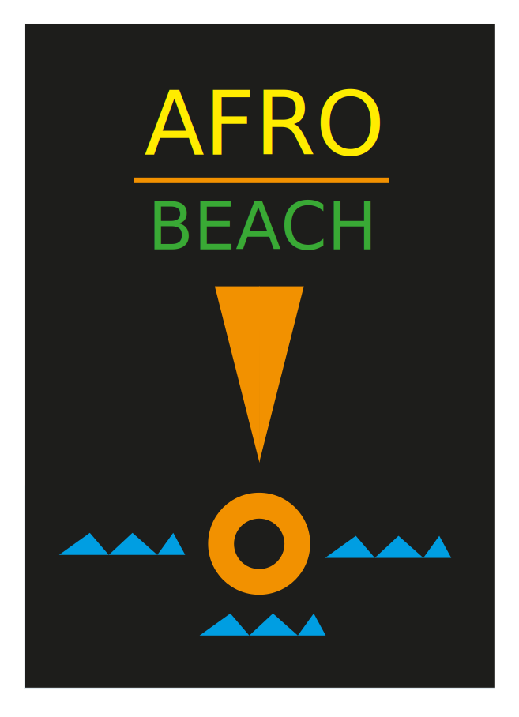

CRECHE
menu
wine menu
about
contact
prev
next
The
De la warr pavilion
wanted a summery vibe for their Afro Beat all dayer poster . I came up with a bunch of ideas influenced by the hi-life sound. They loved the yellow and red colorway.
“Very Usain Bolt”.
They said.




"Call me."
Hanson
I'm available for work!
HOLLA AT MAN